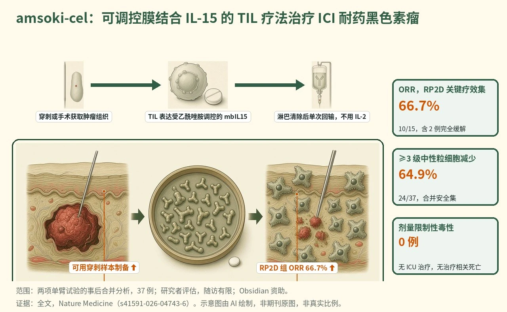

可调控膜结合IL-15工程化TIL：ICI耐药黑色素瘤RP2D组ORR 10/15
两项单臂早期临床试验的汇总分析纳入37例接受治疗的患者。Amsokigene autoleucel（amsoki-cel/OBX-115）表达乙酰唑胺可调控的膜结合IL-15，不再需要外源性IL-2给药。在推荐的2期剂量下，15例检查点抑制剂耐药的晚期黑色素瘤患者中10例达到客观缓解（66.7%；95% CI 38–88%），其中2例完全缓解。

- 37例ICI耐药患者入组两项单臂试验
- TIL工程化表达膜结合IL-15
- 乙酰唑胺调控IL-15信号强度
- RP2D组ORR 66.7%（10/15）
示意图概括了amsoki-cel的核心工程策略：将IL-15以膜结合形式表达于TIL细胞表面，通过口服乙酰唑胺调控其信号强度，从而避免系统性IL-2给药带来的毒性。
研究背景与待解问题
肿瘤浸润淋巴细胞（TIL）疗法已获FDA批准用于晚期黑色素瘤，但现有方案依赖高剂量IL-2以维持TIL扩增和持久性，这带来严重的全身毒性（毛细血管渗漏综合征等）。开发不依赖外源IL-2的工程化TIL是领域重要方向。
本研究要回答的问题是：通过在TIL上表达药理学可调控的膜结合IL-15（mbIL-15），能否在不使用系统性IL-2的情况下实现有效的抗肿瘤反应？
研究设计
两项开放标签、单臂、剂量递增的早期临床试验（1期和1/2期）的事后汇总分析。入组人群为检查点抑制剂（ICB）耐药的不可切除或转移性黑色素瘤患者。
患者经肿瘤切除获取TIL，体外转导表达乙酰唑胺可调控的mbIL-15后扩增。患者接受清淋化疗后输注单剂amsoki-cel，不使用系统性IL-2。乙酰唑胺用于调控mbIL-15信号强度。
主要终点为客观缓解率（ORR），由研究者按RECIST v1.1评估。
核心结果
疗效
在推荐的2期剂量（RP2D）队列中，15例ICB耐药晚期黑色素瘤患者的确认ORR为66.7%（10/15；95% CI 38–88%），其中2例达到完全缓解（CR）。
安全性
37例接受治疗的患者中，最常见的≥3级治疗期间不良事件（TEAE，主要为清淋化疗引起的血液学事件）为：
- 中性粒细胞减少：64.9%（24/37）
- 白细胞减少：56.8%（21/37）
- 淋巴细胞减少：56.8%（21/37）
无剂量限制性毒性（DLT）、无ICU入住、无治疗相关死亡；严重TEAE 10/37例。
首例患者出现快速淋巴细胞扩增和既往照射脑转移灶周围水肿（未达DLT标准），随后方案将细胞最大剂量下调80%、乙酰唑胺剂量下调75%，说明剂量窗口仍在摸索。这提示在ICI治疗史和既往脑转移放疗的患者中，需要特别关注早期淋巴细胞动力学。
药理学调控
乙酰唑胺可在体内调控mbIL-15信号强度。这一小分子调控机制是与传统分泌型细胞因子工程的重要区别，理论上可在发生毒性时及时降低信号。
机制解读
论文所证实的： amsoki-cel是一种工程化TIL产品，通过膜结合形式表达IL-15并利用乙酰唑胺进行药理学调控。临床数据表明，在不使用系统性IL-2的情况下，该方案可在ICB耐药黑色素瘤中诱导客观缓解。
需要进一步验证的： 该mbIL-15调控系统能否降低TIL疗法的整体毒性负担、该ORR水平是否优于或非劣效于已获批的含IL-2方案TIL产品，需要随机对照试验验证。
局限与不确定
- 两项单臂早期试验的事后汇总分析，共37例患者，其中RP2D队列仅15例（Key Efficacy Set），样本量小。
- 无随机对照，无法与现有TIL产品（如lifileucel）或其他疗法直接比较。
- 首例患者出现快速淋巴细胞扩增和既往照射脑转移灶周围水肿（未达DLT标准），促使剂量和方案大幅调整，说明剂量窗口仍在摸索。
- 中位随访仅8.3个月，中位PFS 8.1个月，10例缓解者中4例已进展，缓解持久性和长期安全性数据不充分。
- 汇总分析的统计学效力有限，置信区间宽（95% CI 38–88%）。
临床/产业意义
该研究为"去IL-2"的TIL疗法提供了早期人体概念验证：药理学可调控的mbIL-15工程策略在临床中可行，且在ICB耐药黑色素瘤中显示初步疗效信号。但能否转化为注册策略、与现有标准形成差异化竞争优势，需要等待后续随机对照试验数据。